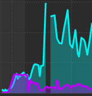
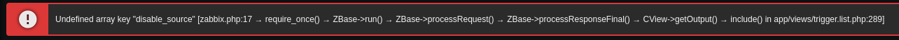

Развертывание сервера с свободной системой мониторинга статусов разнообразных сервисов компьютерной сети, серверов и сетевого оборудования Zabbix на ОС Linux CentOS Stream 9 -------------------------------------------------------------------------------------------------------------------------------------------------------------- Все описанные ниже действия выполнялись под пользователем root -------------------------------------------------------------------------------------------------------------------------------------------------------------- Всем привет! Для реализации данного проекта мне потребовалось: 1) Прописать статические IP-адреса; 2) Обновить пакеты ОС Linux CentOS Stream 9 до последней версии; 3) Установить дополнительные пакеыты yum-utils и nano; 4) Установить и настроить Apache; 5) Установить и настроить PHP 8.3; 6) Установить и настроить MariaDB Server; 7) Установить и настроить Zabbix 7.2.3; 7.1) Экспорт БД из MySQL; 7.2) Импорт БД в MySQL; 7.3) Настройка конфигурационных файлов; 8) Настройка/установка Zabbix через Zabbix Web-интерфейс. -------------------------------------------------------------------------------------------------------------------------------------------------------------- Предисловие: ------------ Nano — это консольный текстовый редактор для UNIX и Unix-подобных операционных систем, основанный на библиотеке curses и распространяемый под лицензией GNU GPL. ------------ SELinux — реализация системы принудительного контроля доступа, которая может работать параллельно с классической избирательной системой контроля доступа. ------------ NMTUI — это инструмент командной строки, который используется для настройки сети в системах Gnu / Linux. При запуске он вызывает графический текстовый интерфейс, который помогает пользователям легко и эффективно настраивать сетевые интерфейсы. ------------ Zabbix — это свободная система мониторинга статусов разнообразных сервисов компьютерной сети, серверов и сетевого оборудования. ------------ Apache HTTP-сервер — это свободный веб-сервер. ------------ MariaDB — это ответвление от системы управления базами данных MySQL, разрабатываемое сообществом под лицензией GNU GPL. -------------------------------------------------------------------------------------------------------------------------------------------------------------- 1) Для избежания потери связи с АРМ/VM, нужно позаботиться о статической IP-адресации. Её можно настроить как на самой АРМ/VM, так и на самом сетевом устройстве. Статическую адресацию можно прописать с помощью инструмента командной строки nmtui. ------------ yum install -y NetworkManager-tui |#|#| Установка пакета "nmtui" для настройки сети на АРМ/VM ------------ Гайд по тому, как пользоваться инструментом nmtui, вы можете посмотреть в интернете. -------------------------------------------------------------------------------------------------------------------------------------------------------------- 2) Обновление пакетов системы. ------------ yum update -y && yum upgrade -y |#|#| Поиск и обновление пакетов системы ------------ reboot |#|#| Команда для перезагрузки АРМ/VM -------------------------------------------------------------------------------------------------------------------------------------------------------------- 3) Установка дополнительных пакетов yum-utils и nano. ------------ yum install -y yum-utils nano |#|#| Команда для установки пакета "yum-utils" и "nano" -------------------------------------------------------------------------------------------------------------------------------------------------------------- 4) Установка и настройка Apache. ------------ yum install -y httpd |#|#| Команда для установки пакета "httpd" ------------ mv /etc/httpd/conf.d/welcome.conf /etc/httpd/conf.d/welcome.conf.org |#|#| Команда для переименования файла "welcome.conf" в "welcome.conf.org" ------------ nano /etc/httpd/conf/httpd.conf |#|#| Команда для открытия файла "httpd.conf" в текстовом редакторе Nano ------------ Приведите прописанные ниже строки в файле "httpd.conf" к следующему виду: ServerAdmin root@zabbix.organization ServerName www.zabbix.organization:80 Options FollowSymLinks AllowOverride All DirectoryIndex index.html index.php index.cgi # server's response header ServerTokens Prod ------------ Расшифровка редактирования строк↑↑↑: ServerAdmin root@zabbix.organization |#|#| строка 91: можете поменять адрес электронной почты администратора(сток: ServerAdmin root@localhost) ServerName www.zabbix.organization:80 |#|#| строка 100: можете поменять имя вашего сервера Options FollowSymLinks |#|#| строка 149: замените Options Indexes FollowSymLinks на Options FollowSymLinks AllowOverride All |#|#| строка 156: замените AllowOverride None на AllowOverride All DirectoryIndex index.html index.php index.cgi |#|#| строка 169: дописать к DirectoryIndex index.html ещё index.php index.cgi ------------ # server's response header |#|#| \ |#|#| --- добавить данные строки в конец файла ServerTokens Prod |#|#| / ------------ systemctl enable --now httpd |#|#| Команда для запуска указанного юнита и добавления службы "httpd" в автозагрузку ------------ firewall-cmd --add-service=http |#|#| Команда для открытия доступа трафику через протокол HTTP firewall-cmd --runtime-to-permanent |#|#| Команда для сохранения конфигурации на межсетевом экране ------------ nano /var/www/html/index.html |#|#| Данной командой создадим текстовый файл "index.html" ------------ Приведите текстовый файл "index.html" к следующему виду и не забудьте сохранить файл перед закрытием: <html> <body> <div style="width: 100%; font-size: 40px; font-weight: bold; text-align: center;"> Zabbix 7.2.3 </div> </body> </html> -------------------------------------------------------------------------------------------------------------------------------------------------------------- 5) Установка и настройка PHP 8.3. ------------ yum module list php |#|#| Команда для просмотра доступных модулей пакетов PHP ------------ yum module -y reset php |#|#| Команда для отключения активного модуля пакетов PHP ------------ yum module -y enable php:8.3 |#|#| Команда для включения модуля пакетов PHP версии 8.3 ------------ yum module -y install php:8.3/common |#|#| Команда для установки модуля пакетов PHP версии 8.3 ------------ php -v |#|#| Команда для проверки установленной версии PHP ------------ echo '<?php echo `php -i`."\n"; ?>' > php_test.php |#|#| Создание файла "php_test.php" с тестовым сценарием для проверки PHP ------------ php php_test.php | head |#|#| Команда для запуска скрипта "php_test.php" с последующим экранированием вывода в консоль -------------------------------------------------------------------------------------------------------------------------------------------------------------- 6) Установка и настройка MariaDB Server. ------------ yum install -y mariadb-server |#|#| Команда для установки пакета "mariadb-server" ------------ nano /etc/my.cnf.d/charset.cnf |#|#| Данной командой создадим/отредактируем текстовый файл "charset.cnf" ------------ Приведите конфигурационных файл к следующему виду и сохраните: [mysqld] character-set-server = utf8mb4 [client] default-character-set = utf8mb4 ------------ systemctl enable --now mariadb |#|#| Команда для запуска указанного юнита и добавления службы "mariadb" в автозагрузку ------------ firewall-cmd --add-service=mysql |#|#| Команда для открытия доступа к серверу MariaDB с удаленных хостов ------------ firewall-cmd --runtime-to-permanent |#|#| Команда для сохранения конфигурации на межсетевом экране ------------ mysql_secure_installation |#|#| Команда для выполнения первоначальной настройки MariaDB ------------ План настройки MariaDB: 1. Задайте пароль для MariaDB; 2. Switch to unix_socket authentication [Y/n] n 3. Change the root password? [Y/n] n 4. Remove anonymous users? [Y/n] y 5. Disallow root login remotely? [Y/n] y 6. Remove test database and access to it? [Y/n] y 7. Reload privilege tables now? [Y/n] y ------------ Tutorial for MariaDB↓↓↓ ------------ mysql |#|#| Команда для подключения к MariaDB с помощью пользователя root ------------ show grants for root@localhost; |#|#| Команда для вывода грантов на root@localhost ------------ select user,host,password from mysql.user; |#|#| Команда для вывода списка пользователей ------------ show databases; |#|#| Команда для вывода списка баз данных ------------ create database test_database; |#|#| Команда для создания базы данных с названием "test_database" ------------ create table test_database.test_table (id int, name varchar(50), address varchar(50), primary key (id)); |#|#| Команда для создания тестовой таблицы в базе данных "test_database" ------------ insert into test_database.test_table(id, name, address) values("001", "CentOS", "Hiroshima"); |#|#| Команда для заполнения данных в таблице "test_database" ------------ select * from test_database.test_table; |#|#| Команда для вывода содержимого в базе данных "test_database" ------------ drop database test_database; |#|#| Команда для удаления базы данных "test_database" ------------ exit |#|#| Команда для выхода из MariaDB ------------ systemctl stop mariadb |#|#| Команда для остановки службы "MariaDB" ------------ rm -rf /var/lib/mysql/* |#|#| Команда для очистки каталога "/var/lib/mysql/" ------------ mysql_install_db --datadir=/var/lib/mysql --user=mysql |#|#| Команда для инициализации каталога данных MySQL ------------ systemctl start mariadb |#|#| Команда для запуска службы "MariaDB" -------------------------------------------------------------------------------------------------------------------------------------------------------------- 7) Установка и настройка Zabbix 7.2.3. ------------ yum install -y php-mysqlnd php-gd php-xml php-bcmath php-ldap |#|#| Команда для установки необходимых пакетов "PHP" ------------ rpm -Uvh https://repo.zabbix.com/zabbix/7.2/release/centos/9/noarch/zabbix-release-latest-7.2.el9.noarch.rpm |#|#| Команда для подключения Zabbix-репозитория ------------ yum install -y zabbix-server-mysql zabbix-web-mysql zabbix-apache-conf zabbix-sql-scripts zabbix-selinux-policy zabbix-agent2 |#|#| Команда установки пакетов Zabbix Server-а -------------------------------------------------------------------------------------------------------------------------------------------------------------- 7.1) Экспорт БД из MySQL. ------------ systemctl stop zabbix-server zabbix-agent |#|#| Команда для остановки сервисов zabbix-server и zabbix-agent ------------ mkdir /DB/ |#|#| Команда для создания в корне папки "DB" ------------ /usr/bin/mysqldump --opt -v --databases zabbix -uzabbix -p'zabbixpassword' | /usr/bin/gzip -c > /DB/zabbix.sql.gz |#|#| Команда для выполнения РК БД Zabbix в MySQL на старой ВМ -------------------------------------------------------------------------------------------------------------------------------------------------------------- Самостоятельно выполните перенос БД "Zabbix" из старой ВМ с новую. -------------------------------------------------------------------------------------------------------------------------------------------------------------- 7.2) Импорт БД в MySQL. ------------ mysql -u root -p < /DB/zabbix_dump.sql |#|#| Команда для выполнения импортирования БД Zabbix в MySQL на новой ВМ ------------ После того, как БД была импортирована в MySQL, также создайте в системе управления базами данных нового пользователя Zabbix, как и на старой ВМ. ------------ mysql -u root -p |#|#| Команда для входа в систему управления БД под пользователем "root" ------------ CREATE USER zabbix@localhost IDENTIFIED BY zabbixpassword; |#|#| Команда для создания УЗ "zabbix" с паролем "zabbixpassword" ------------ exit |#|#| Команда для выхода из MariaDB -------------------------------------------------------------------------------------------------------------------------------------------------------------- По желанию можно также скопировать конфигурационные файлы из старой ВМ в новую. Список конфигурационных фалов с их местонахождением: /etc/zabbix/zabbix_server.conf zabbix_server.te /etc/zabbix/zabbix_agent2.conf -------------------------------------------------------------------------------------------------------------------------------------------------------------- 7.3) Настройка конфигурационных файлов. ------------ nano /etc/zabbix/zabbix_server.conf |#|#| Команда для открытия конфигурационного файла "zabbix_server.conf" в текстовом редакторе Nano ------------ Приведите ниже описанные строки в открытом конфигурационном файле "zabbix_server.conf" к следующему виду, после внесённых изменений не забудьте сохраниить конфигурационный файл: DBHost=localhost DBPassword=password ------------ systemctl enable --now zabbix-server |#|#| Команда для запуска указанного юнита и добавления службы "zabbix-server" в автозагрузку ------------ ЕСЛИ НА ВАШЕМ УСТРОЙСТВЕ ВКЛЮЧЕНА СЛУЖБА SELINUX, ТО ВЫПОЛНИТЕ КОМАНДЫ ОПИСАННЫЕ НИЖЕ↓↓↓!!! ------------ setsebool -P zabbix_can_network on setsebool -P httpd_can_connect_zabbix on setsebool -P domain_can_mmap_files on setsebool -P daemons_enable_cluster_mode on ------------ nano zabbix_server.te |#|#| Данной командой создадим текстовый файл "zabbix_server.te" ------------ Приведите конфигурационных файл к следующему виду и сохраните: module zabbix_server 1.0; require { type initctl_t; type devlog_t; type proc_kcore_t; type zabbix_t; type zabbix_agent_t; type rpm_exec_t; type rpm_var_lib_t; class fifo_file getattr; class sock_file getattr; class file { execute execute_no_trans map open getattr }; class capability dac_override; } #============= zabbix_t ============== allow zabbix_t self:capability dac_override; #============= zabbix_agent_t ============== allow zabbix_agent_t devlog_t:sock_file getattr; allow zabbix_agent_t initctl_t:fifo_file getattr; allow zabbix_agent_t proc_kcore_t:file getattr; allow zabbix_agent_t rpm_var_lib_t:file open; allow zabbix_agent_t rpm_exec_t:file { execute execute_no_trans map }; ------------ checkmodule -m -M -o zabbix_server.mod zabbix_server.te semodule_package --outfile zabbix_server.pp --module zabbix_server.mod semodule -i zabbix_server.pp ------------ firewall-cmd --add-service={http,https} |#|#| Команда для открытия доступа трафику через протоколы HTTP/HTTPS ------------ firewall-cmd --add-port={10051/tcp,10050/tcp} |#|#| Команда для открытия доступа трафику через порты 10051 по протоколу управления передачей данных TCP ------------ firewall-cmd --runtime-to-permanent |#|#| Команда для сохранения конфигурации на межсетевом экране ------------ nano /etc/zabbix/zabbix_agent2.conf |#|#| Команда для открытия конфигурационного файла "zabbix_agent2.conf" в текстовом редакторе Nano ------------ Приведите ниже описанные строки в открытом конфигурационном файле "zabbix_agent2.conf" к следующему виду, после внесённых изменений не забудьте сохраниить конфигурационный файл: Server=127.0.0.1 ServerActive=127.0.0.1 Hostname=Zabbix server ------------ systemctl enable --now zabbix-agent2 |#|#| Команда для запуска указанного юнита и добавления службы "zabbix-agent2" в автозагрузку ------------ systemctl restart httpd php-fpm |#|#| Команда для перезапуска служб "httpd" и "php-fpm" -------------------------------------------------------------------------------------------------------------------------------------------------------------- 8) Настройка/установка Zabbix через Zabbix Web-интерфейс. ------------ 1. Открываете браузер и переходите по адресу http://IP-address server-a/zabbix/ — откроется страница установки Zabbix Web и нажимаем на кнопку "Next Step" 2. Далее внимательно смотрим на результаты проверки нашего Web-сервера — справа мы должны увидеть все OK. Когда все результаты будут OK, нажимаем на "Next Step" 3. Далее настройки подключения к базе оставляем как есть — дополнительно прописываем пароль, который задали при создании пользователя zabbix. После нажимаем "Next Step" 4. Далее в окне оставляем все как есть и нажимаем "Next Step" 5. В последнем окне мы проверяем настройки и нажимаем "Next Step" 6. После завершения установки нажимаем на кнопку "Finish" 7. Для входа в систему используйте созданные УЗ в Zabbix на старой ВМ. -------------------------------------------------------------------------------------------------------------------------------------------------------------- Выводы: 1) Лучше всего устанавливать ПО Zabbix на чистую и обновленную ВМ с родными репозиториями, а после уже подключать дополнительные репозитории, такие как EPEL, REMI, ElRepo и т.п., для избежания конфликта устанавливаемых пакетов. 2) В версии Zabbix 7.2.3 по сравнению с 7.0, перестала пропадать часть графика(просто не отрисовывалась).  3) Также была исправлена следующая ошибка в триггерах элементов данных: Undefined array key "disable_source" [zabbix.php:17 → require_once() → ZBase->run() → ZBase->processRequest() → ZBase->processResponseFinal() → CView->getOutput() → include() in app/views/trigger.list.php:289] P.S. На момент установки Zabbix 7.0, также были установлены пакеты PHP версии 8.1.  -------------------------------------------------------------------------------------------------------------------------------------------------------------- На этом инструкция закончена! Спасибо за внимание!